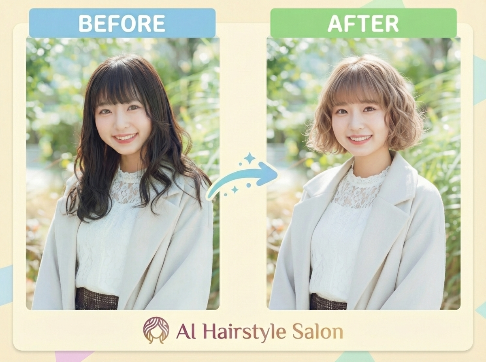
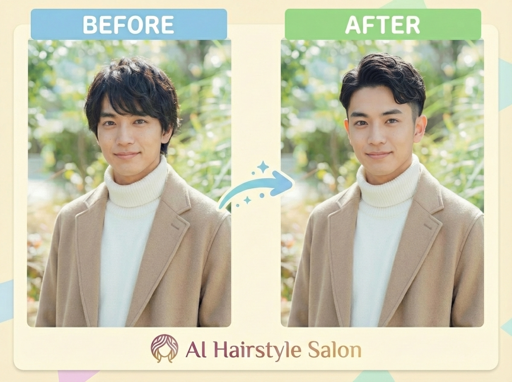
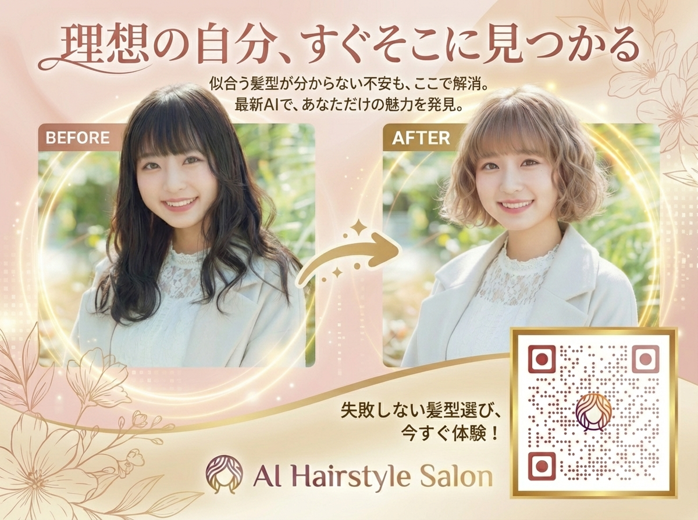
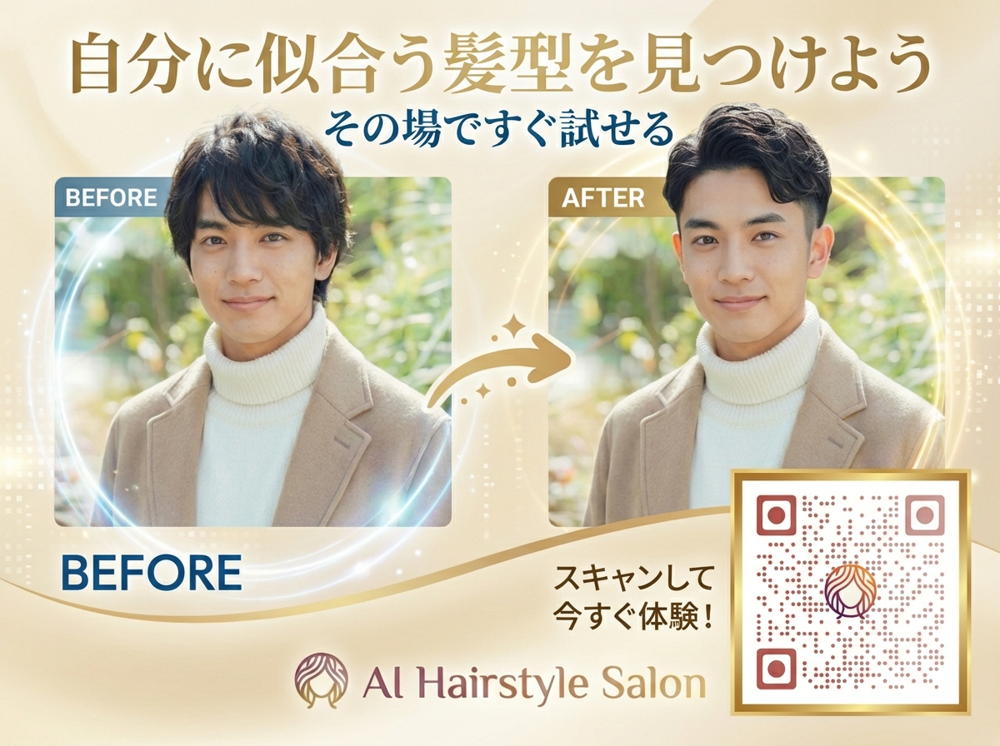

AIを活用した髪型シミュレーションWebアプリ「AI Hairstyle Salon」の開発から美容院への実店舗導入までの全工程を記録したケーススタディ。Google Gemini APIによる画像生成技術を活用し、約3ヶ月（約300時間）・647コミットで本番運用レベルのサービスを構築。VSCodeの使い方もわからない状態からのスタートだったが、Claude Code（AI開発支援ツール）を全面活用することで、決済・認証・テストを含む商用品質のアプリケーションを個人で実現した。API費用ゼロ（Google AI Studio無料枠）で開発・運用。
| 項目 | 内容 |
|---|---|
| プロダクト名 | AI Hairstyle Salon |
| サイト | https://ai-hairstyle-salon.com |
| コンセプト | 「なりたい自分への後押し」— 髪を切る前にAIでシミュレーション |
| 開発者 | KUMANO AI STUDIO |
| 開発期間 | 2025年9月29日 〜 2025年12月31日（約3ヶ月・約300時間） |
| 規模 | 647コミット、30+コンポーネント |
| 導入先 | 海田町の美容院（QRコード広告設置） |
| API費用 | ¥0（Google AI Studio無料枠） |
| レイヤー | 技術 |
|---|---|
| フロントエンド | React 19 + TypeScript + Vite 6 + Tailwind CSS |
| バックエンド | Firebase (Authentication / Firestore / Cloud Functions / Storage) |
| AI | Google Gemini API（画像生成・画像編集） |
| 決済 | Stripe（サブスクリプション + 都度課金） |
| テスト | Vitest + Playwright + MSW |
| ホスティング | Firebase Hosting + Cloud Functions |
| ドメイン | お名前.com |
ユーザー（ブラウザ）
↓ 写真アップロード + 髪型選択
フロントエンド（React + Vite / Firebase Hosting）
↓ Cloud Functions呼び出し
Firebase Cloud Functions
├→ Firestoreからプロンプト設定を取得
├→ Gemini APIに画像＋プロンプト送信
├→ クレジットのアトミック操作（予約→消費/返却）
└→ 生成結果をFirebase Storageに保存
↓ 結果を返却
フロントエンド
↓ Before/After表示
ユーザー| 時期 | マイルストーン |
|---|---|
| 2025/9/29 | 開発着手（VSCodeの使い方もわからない状態からスタート） |
| — | MVP開発（写真アップロード→AI変換→結果表示） |
| — | 認証・決済・管理画面の実装 |
| — | テスト整備（Vitest + Playwright） |
| 2025/12/31 | 最終コミット（647コミット到達） |
| 2026/1 | QRコード広告作成・美容院への紹介 |
| 2026/2 | 美容院へのQRコード設置・導入 |
VSCodeの使い方すら知らない状態から、Claude Code（VSCode統合のAI開発ツール）でほぼ全てのコーディングを実施。特に効果が大きかった領域:
| チャレンジ | 解決策 |
|---|---|
| 髪型が変わらない問題 | スキンヘッド方式 → 参考画像方式 → 最終的にLLMが安定再現可能な髪型に限定する「直接指示方式」に到達 |
| プロンプト調整のループが遅い | プロンプトをFirestoreで動的管理する仕組みを構築。デプロイ不要でリアルタイム調整可能に |
| クレジットの二重課金防止 | Firestoreトランザクションによるアトミック操作（available → reserved → consumed / released） |
| Stripe Webhookの冪等性 | processedWebhookEventsコレクションで処理済みイベントを管理 |
| 不適切画像のアップロード対策 | Gemini APIのセーフティフィルター＋アプリ側でエラーカウント・利用制限 |
| プロンプトの秘匿 | フロントエンドにプロンプトを持たず、Cloud Functions経由でのみGemini APIと通信 |
| 女性の変換例 | 男性の変換例 |
|---|---|
 |
 |
| 女性向け | 男性向け |
|---|---|
 |
 |
美容師からの反応: > 「すごい」と評価。ただし「この通りに髪を切れるわけではない」という点で、顧客への見せ方に慎重な面もあった。
友人・知人での検証: > かなり役に立つとの評価。特に「思い切ってイメチェンしたいとき」に事前シミュレーションできる点が好評。「イメチェンに踏み出すには必須」という声も。
| 項目 | コスト |
|---|---|
| AI API費用 | ¥0（Google AI Studio無料枠） |
| 開発所要時間 | 約300時間（3ヶ月） |
| ホスティング | Firebase無料枠（Spark） |
| ドメイン | お名前.com（年額数千円） |
| 決済手数料 | Stripe標準手数料（利用時のみ） |